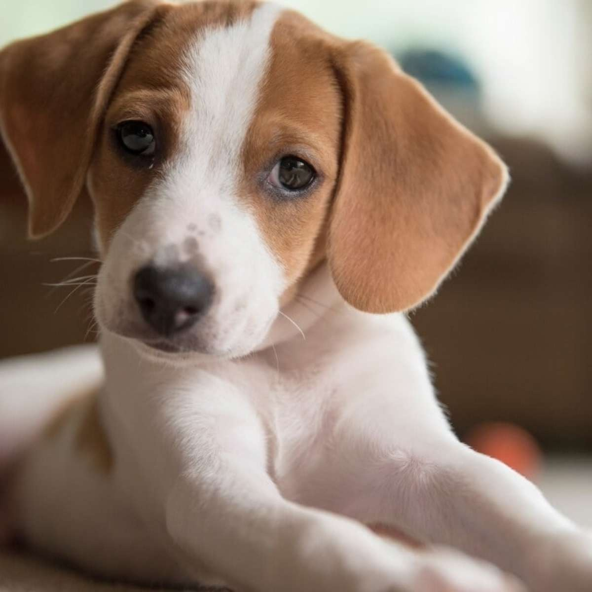
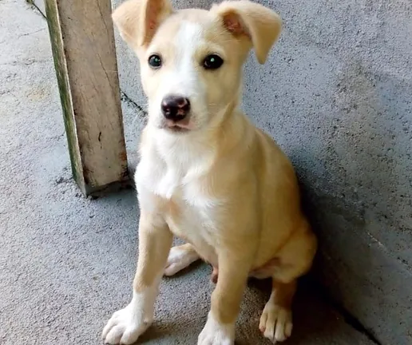
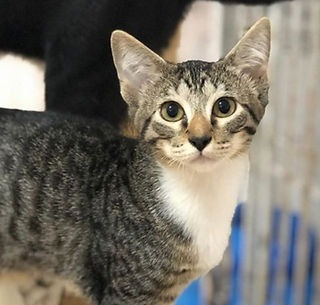
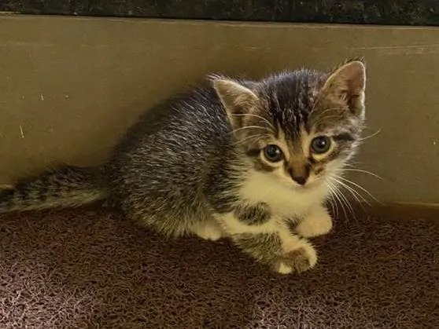
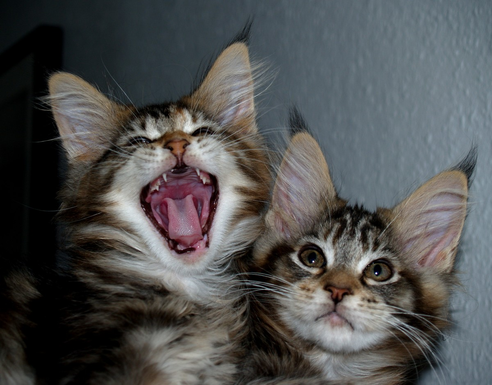

Cappucino, é pura energia! Ele adora correr, brincar de buscar e precisa de muita atividade.
Cappucino será seu companheiro ideal.
Paçoca
Idade: 8 meses
Ele faz amizade com todos que encontra e adora participar de festas.
Seu jeito sociável e brincalhão garante que todos se divirtam ao seu redor.
Otávio
Idade: 4 meses
Ele adora dormir e fazer companhia no sofá, sempre pronto para um carinho.
Sua presença tranquila é perfeita para quem busca um amigo relaxante.

Belo
Idade 3 meses
Ele adora cheirar cada canto e descobrir novos lugares. Se você procura um parceiro para aventuras,
Belo, é a escolha perfeita!

Lorena
Idade: 5 meses
Cachorro fêmea, brincalhona e muito animada precisando de um lar.
Adora frutas e brincar com crianças.

Mingau
Idade: 1 ano
É calmo e adora se aconchegar. Ama relaxar no sol durante o dia.
Perfeito para quem busca uma companhia serena e amorosa.

Tinker Bell
Idade: 1 mês
Sua personalidade travessa e é muito curiosa, traz alegria a todos ao seu redor! ela adora interagir com visitas e pedir carinho.
Lua
Idade: 6 meses
Ela adora fazer acrobacias e ser engraçada. Com seu jeito travesso e olhos brilhantes,
transforma qualquer dia comum em uma grande diversão!

Jade e Marie
Idade: 2 meses
Jade é aventureira, sempre pronta para brincar,
enquanto Marrie é calma observadora, que prefere relaxar e acompanhar a irmã.
Juntas, elas formam uma dupla perfeita!